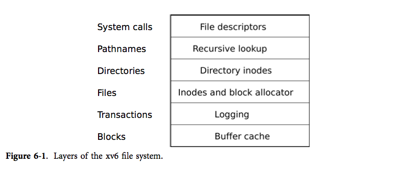
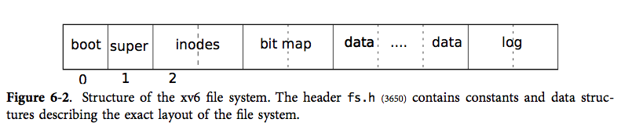
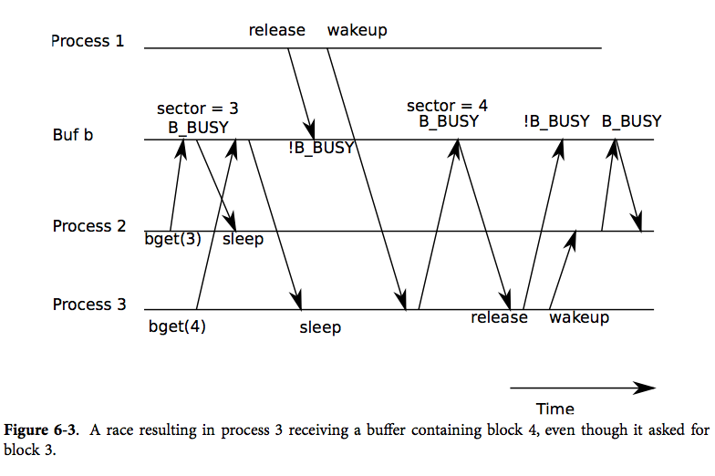
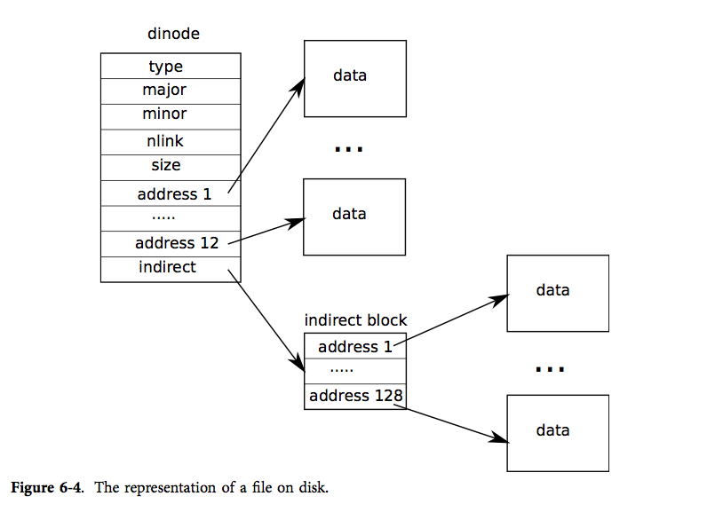

文件系统的目的是组织和存储数据，典型的文件系统支持用户和程序间的数据共享，并提供数据持久化的支持（即重启之后数据仍然可用）。
xv6 的文件系统中使用了类似 Unix 的文件，文件描述符，目录和路经名（请参阅第零章），并且把数据存储到一块 IDE 磁盘上（请参阅第三章）。这个文件系统解决了几大难题：
这一章的剩余内容将阐述 xv6 是如何解决这些问题的。

xv6 的文件系统分6层实现，如图6-1所示。最下面一层通过块缓冲读写 IDE 硬盘，它同步了对磁盘的访问，保证同时只有一个内核进程可以修改磁盘块。第二层使得更高层的接口可以将对磁盘的更新按会话打包，通过会话的方式来保证这些操作是原子操作（要么都被应用，要么都不被应用）。第三层提供无名文件，每一个这样的文件由一个 i 节点和一连串的数据块组成。第四层将目录实现为一种特殊的 i 节点，它的内容是一连串的目录项，每一个目录项包含一个文件名和对应的 i 节点。第五层提供了层次路经名（如/usr/rtm/xv6/fs.c这样的），这一层通过递归的方式来查询路径对应的文件。最后一层将许多 UNIX 的资源（如管道，设备，文件等）抽象为文件系统的接口，极大地简化了程序员的工作。

文件系统必须设计好在磁盘上的什么地方放置 i 节点和数据块。xv6 把磁盘划分为几个区块，如图6-2所示。文件系统不使用第0块（第0块存有 bootloader）。第1块叫做超级块；它包含了文件系统的元信息（如文件系统的总块数，数据块块数，i 节点数，以及日志的块数）。从第2块开始存放 i 节点，每一块能够存放多个 i 节点。接下来的块存放空闲块位图。剩下的大部分块是数据块，它们保存了文件和目录的内容。在磁盘的最后是日志块，它们是会话层的一部分，将在后面详述。
块缓冲有两个任务：（1）同步对磁盘的访问，使得对于每一个块，同一时间只有一份拷贝放在内存中并且只有一个内核线程使用这份拷贝；（2）缓存常用的块以提升性能。代码参见 bio.c。
块缓冲提供的的主要接口是 bread 和 bwrite；前者从磁盘中取出一块放入缓冲区，后者把缓冲区中的一块写到磁盘上正确的地方。当内核处理完一个缓冲块之后，需要调用 brelse 释放它。
块缓冲仅允许最多一个内核线程引用它，以此来同步对磁盘的访问，如果一个内核线程引用了一个缓冲块，但还没有释放它，那么其他调用 bread 的进程就会阻塞。文件系统的更高几层正是依赖块缓冲层的同步机制来保证其正确性。
块缓冲有固定数量的缓冲区，这意味着如果文件系统请求一个不在缓冲中的块，必须换出一个已经使用的缓冲区。这里的置换策略是 LRU，因为我们假设假设最近未使用的块不太可能再被使用。
块缓冲是缓冲区的双向链表。 binit（1231） 会从一个静态数组 buf 中构建出一个有 NBUF 个元素的双向链表。所有对块缓冲的访问都通过链表而非静态数组。
一个缓冲区有三种状态：B_VALID 意味着这个缓冲区拥有磁盘块的有效内容。B_DIRTY 意味着缓冲区的内容已经被改变并且需要写回磁盘。B_BUSY 意味着有某个内核线程持有这个缓冲区且尚未释放。
bread（4102） 调用 bget 获得指定扇区的缓冲区（4106）。如果缓冲区需要从磁盘中读出，bread 会在返回缓冲区前调用 iderw。
bget（4066）扫描缓冲区链表，通过给定的设备号和扇区号找到对应的缓冲区（4073-4084）。如果存在这样一个缓冲区，并且它还不是处于 B_BUSY 状态，bget 就会设置它的 B_BUSY 位并且返回。如果找到的缓冲区已经在使用中，bget 就会睡眠等待它被释放。当 sleep 返回的时候，bget 并不能假设这块缓冲区现在可用了，事实上，sleep 时释放了 buf_table_lock, 醒来后重新获取了它，这就不能保证 b 仍然是可用的缓冲区：它有可能被用来缓冲另外一个扇区。bget 非常无奈，只能重新扫描一次（4082），希望这次能够找到可用的缓冲区。

如果 bget 中没有那句 goto 语句的话，那么就可能产生图6-3中的竞争。第1个进程有一块缓冲了扇区3的缓冲区。现在另外两个进程来了，第1个进程 get 缓冲区3并且为之睡眠（缓冲区3使用中）。第2个进程 get 缓冲区4，并且也可能在同一块缓冲区上睡眠，但这次是在等待新分配的循环中睡眠的，因为已经没有空闲的缓冲区，而持有扇区3的缓冲区处于链表头，因此被重用。第一个进程释放了这块缓冲区，wakeup 恰巧安排进程3先运行，而后它拿到这块缓冲区后把扇区4读了进来。进程3之后也释放了缓冲区并且唤醒了进程2。如果没有 goto 语句的话，进程2就会在把拿到的缓冲区标记为 BUSY 后从 bget 返回，但实际上这块缓冲区装的是扇区4而不是3。这样的错误可能导致各种各样的麻烦，因为扇区3和4的内容是不同的；实际上，xv6中它们存储着 i 节点。
如果所请求的扇区还未被缓冲，bget 必须分配一个缓冲区，可能是重用某一个缓冲区。它再次扫描缓冲区列表，寻找一块不是忙状态的块，任何这样的块都可以被拿去使用。bget 修改这个块的元数据来记录新的设备号和扇区号并且标记这个块为 BUSY，最后返回它（4091-4093）。需要注意的是，对标记位的赋值（4089-4091）不仅设置了 B_BUSY 位，也清除了 B_VALID 位和 B_DIRTY 位，用来保证 bread 会用磁盘的内容来填充缓冲区，而不是继续使用块之前的内容。
因为块缓冲是用于同步的，保证任何时候对于每一个扇区都只有一块缓冲区是非常重要的，bget 第一个循环确认没有缓冲区已经加载了所需扇区的内容，并且在此之后 bget 都没有释放 buf_table_lock，因此 bget 的操作是安全的。
如果所有的缓冲区都处于忙碌状态，那么就出问题了，bget 就会报错。不过一个更优雅的响应是进入睡眠状态，直到有一块缓冲区变为空闲状态。虽然这有可能导致死锁。
一旦 bread 给自己的调用者返回了一块缓冲区，调用者就独占了这块缓冲区。如果调用者写了数据，他必须调用 bwrite（4114）在释放缓冲区之前将修改了的数据写入磁盘，bwrite 设置 B_DIRTY 位并且调用的 iderw 将缓冲区的内容写到磁盘。
当调用者使用完了一块缓冲区，他必须调用 brelse 来释放它，（关于 brelse 这个名字，它是 b-relese 的缩写，它源自 Unix 并且在 BSD，Linux 和 Solaris 中被广泛使用）。brelse（4125）将一块缓冲区移动到链表的头部（4132-4137），清除 B_BUSY，唤醒睡眠在这块缓冲区上的进程。移动缓冲区的作用在于使得链表按照最近被使用的情况排序，链表中的第一块是最近被用的，最后一块是最早被用的。bget 中的两个循环就利用这一点：寻找已经存在的缓冲区在最坏情况下必须遍历整个链表，但是由于数据局部性，从最近使用的块开始找（从 bcache.head 开始，然后用 next 指针遍历）会大大减少扫描的时间。反之，找一块可重用的缓冲区是从链表头向前找，相当于从尾部往头部通过 prev 指针遍历，从而找到的就是最近不被使用的块。
文件系统设计中最有趣的问题之一就是错误恢复，产生这样的问题是因为大多数的文件系统都涉及到对磁盘多次的写操作，如果在写操作的过程当中系统崩溃了，就会使得磁盘上的文件系统处于不一致的状态中。举例来说，根据写的顺序的不同，上述错误可能会导致一个目录项指向一个空闲的 i 节点，或者产生一个已被分配但是未被引用的块。后一种情况相对来说好一些，但在前一种情况中，目录项指向了一个空闲的 i 节点，重启之后就会导致非常严重的问题。
xv6 通过简单的日志系统来解决文件操作过程当中崩溃所导致的问题。一个系统调用并不直接导致对磁盘上文件系统的写操作，相反，他会把一个对磁盘写操作的描述包装成一个日志写在磁盘中。当系统调用把所有的写操作都写好了日志，它就会写一个特殊的提交记录到磁盘上，代表一次完整的操作。从那时起，系统调用就会把日志中的数据写入磁盘文件系统的数据结构中。在那些写操作都成功完成后，系统调用就会删除磁盘上的日志文件。
为什么日志可以解决文件系统操作中出现的崩溃呢？如果崩溃发生在操作提交之前，那么磁盘上的日志文件就不会被标记为已完成，恢复系统的代码就会忽视它，磁盘的状态正如这个操作从未执行过一样。如果是在操作提交之后崩溃的，恢复程序会重演所有的写操作，可能会重复之前已经进行了的对磁盘文件系统的写操作。在任何一种情况下，日志文件都使得磁盘操作对于系统崩溃来说是原子操作：在恢复之后，要么所有的写操作都完成了，要么一个写操作都没有完成。
日志存在于磁盘末端已知的固定区域。它包含了一个起始块，紧接着一连串的数据块。起始块包含了一个扇区号的数组，每一个对应于日志中的数据块，起始块还包含了日志数据块的计数。xv6 在提交后修改日志的起始块，而不是之前，并且在将日志中的数据块都拷贝到文件系统之后将数据块计数清0。提交之后，清0之前的崩溃就会导致一个非0的计数值。
每一个系统调用都可能包含一个必须从头到尾原子完成的写操作序列，我们称这样的一个序列为一个会话，虽然他比数据库中的会话要简单得多。任何时候只能有一个进程在一个会话之中，其他进程必须等待当前会话中的进程结束。因此同一时刻日志最多只记录一次会话。
xv6 不允许并发会话，目的是为了避免下面几种问题。假设会话 X 把一个对 i 节点的修改写入了会话中。并发的会话 Y 从同一块中读出了另一个 i 节点，更新了它，把 i 节点块写入了日志并且提交。这就会导致可怕的后果：Y 的提交导致被 X 修改过的 i 节点块被写入磁盘，而 X 此时并没有提交它的修改。如果这时候发生崩溃会使得 X 的修改只应用了一部分而不是全部，从而打破会话是原子的这一性质。有一些复杂的办法可以解决这个问题，但 xv6 直接通过不允许并行的会话来回避这个问题。
xv6 允许只读的系统调用在一次会话中并发执行。i 节点锁会使得会话对只读系统调用看上去是原子性的。
xv6 使用固定量的磁盘空间来保存日志。系统调用写入日志的块的总大小不能大于日志的总大小。对于大多数系统调用来说这都不是个问题，但是其中两个可能会写大量的块：write 和 unlink。写一个大文件可能会写很多的数据块、位图块，以及 i 节点块。移除对一个大文件的链接可能会写很多的位图块以及一个 i 节点块。xv6 的写系统调用将大的写操作拆分成几个小的写操作，使得被修改的块能放入日志中。unlink 不会导致问题因为实际上 xv6 只使用一个位图块。
对日志的常见使用方法像下面这样
begin_trans();
...
bp = bread(...);
bp->data[...] = ...;
log_write(bp);
...
commit_trans();
begin_trans（4277） 会一直等到它独占了日志的使用权后返回。
log_write（4325） 像是 bwrite 的一个代理；它把块中新的内容记录到日志中，并且把块的扇区号记录在内存中。log_write 仍将修改后的块留在内存中的缓冲区中，因此相继的本会话中对这一块的读操作都会返回已修改的内容。log_write 能够知道在一次会话中对同一块进行了多次读写，并且覆盖之前同一块的日志。
commit_trans（4301） 将日志的起始块写到磁盘上，这样在这个时间点之后的系统崩溃就能够恢复，只需将磁盘中的内容用日志中的内容改写。commit_trans 调用 install_trans（4211） 来从日志中逐块的读并把他们写到文件系统中合适的地方。最后 commit_trans 会把日志起始块中的计数改为0，这样在下次会话之前的系统崩溃就会使得恢复代码忽略日志。
recover_from_log（4268） 在 initlog（4205） 中被调用，而 initlog 在第一个用户进程开始前的引导过程中被调用。它读取日志的起始块，如果起始块说日志中有一个提交了的会话，它就会仿照 commit_trans 的行为执行，从而从错误中恢复。
filewrite（5352） 中有一个使用了日志的例子：
begin_trans();
ilock(f->ip);
r = writei(f->ip, ...);
iunlock(f->ip);
commit_trans();
我们在一个用于将一次大的写操作拆分成一些会话的循环中找到了这段代码，在每一次会话中这段只会写部分块，因为日志的大小是有限固定的。对 writei 的调用会在一次会话中写很多的块：文件的 i 节点，一个或多个位图块，以及一些数据块。在 begin_trans 之后再执行 ilock 是一种避免死锁的办法：因为每次会话都已经有一个锁保护了，因此在持有两个锁的时候，要保证一定的加锁顺序。
文件和目录的内容存在磁盘块中，磁盘块都从一个空闲块池中分配出来。xv6 的块分配器包含一个磁盘上的空闲块位图，每个块占一个位。引导区，超级块，i 节点块和位图块的位永远都被置为有效。
块分配器提供两个功能： balloc 分配一个新的磁盘块，bfree 释放一个块。balloc（4454） 最开始调用 readsb 从磁盘中读出超级块（或者从块缓冲中）到 sb 中。 balloc 会算出位图块的位置，计算的方法是计算多少块被引导区、超级块和 i 节点块占用（用 BBLOCK）。循环（4462）从第0块开始一直到 sb.size（文件系统块总数），寻找一个在位图中的位是0的块。为了提高效率，这个循环被分成两块。外层循环读位图的每一块。内层循环检查这一块中的所有 BPB 那么多个位。两个进程可能同时申请空闲块，这就有可能导致竞争，但事实上块缓冲只允许一个进程同时只使用一个块。
bfree（4481） 找到了空闲的块之后就会清空位图中对应的位。同样，bread 和 brelse 的块的互斥使用使得无需再特意加锁。
i 节点这个术语可以有两个意思。它可以指的是磁盘上的记录文件大小、数据块扇区号的数据结构。也可以指内存中的一个 i 节点，它包含了一个磁盘上 i 节点的拷贝，以及一些内核需要的附加信息。
所有的磁盘上的 i 节点都被打包在一个称为 i 节点块的连续区域中。每一个 i 节点的大小都是一样的，所以对于一个给定的数字n，很容易找到磁盘上对应的 i 节点。事实上这个给定的数字就是操作系统中 i 节点的编号。
磁盘上的 i 节点由结构体 dinode（3676）定义。type 域用来区分文件、目录和特殊文件的 i 节点。如果 type 是0的话就意味着这是一个空闲的 i 节点。nlink 域用来记录指向了这一个 i 节点的目录项，这是用于判断一个 i 节点是否应该被释放的。size 域记录了文件的字节数。addrs 数组用于这个文件的数据块的块号。
内核在内存中维护活动的 i 节点。结构体 inode（3762）是磁盘中的结构体 dinode 在内存中的拷贝。内核只会在有 C 指针指向一个 i 节点的时候才会把这个 i 节点保存在内存中。ref 域用于统计有多少个 C 指针指向它。如果 ref 变为0，内核就会丢掉这个 i 节点。iget 和 iput 两个函数申请和释放 i 节点指针，修改引用计数。i 节点指针可能从文件描述符产生，从当前工作目录产生，也有可能从一些内核代码如 exec 中产生。
持有 iget 返回的 i 节点的指针将保证这个 i 节点会留在缓存中，不会被删掉（特别地不会被用于缓存另一个文件）。因此 iget 返回的指针相当一种较弱的锁，虽然它并不要求持有者真的锁上这个 i 节点。文件系统的许多部分都依赖于这个特性，一方面是为了长期地持有对 i 节点的引用（比如打开的文件和当前目录），一方面是在操纵多个 i 节点的程序中避免竞争和死锁（比如路径名查找）。
iget 返回 i 节点可能没有任何有用的内容。为了保证它持有一个磁盘上 i 节点的有效拷贝，程序必须调用ilock。它会锁住 i 节点（从而其他进程就无法使用它）并从磁盘中读出 i 节点的信息（如果它还没有被读出的话）。iunlock 释放 i 节点上的锁。把对i 节点指针的获取和 i 节点的锁分开避免了某些情况下的死锁，比如在目录查询的例子中，数个进程都可以通过 iget 获得一个 i 节点的 C 指针，只有一个进程可以锁住一个 i 节点。
i 节点缓存只会缓存被 C 指针指向的 i 节点。它主要的工作是同步多个进程对 i 节点的访问而非缓存。如果一个 i 节点频繁被使用，块缓冲可能会把它保留在内存中，即使 i 节点缓存没有缓存它。
要申请一个新的 i 节点（比如创建文件的时候），xv6 会调用 ialloc（4603）。ialloc 同 balloc 类似：它逐块遍历磁盘上的 i 节点数据结构，寻找一个标记为空闲的 i 节点。当它找到一个时，就会把它的 type 修改掉（变为非0），最后调用 iget（4620使得它从 i 节点缓存中返回。由于每个时刻只有一个进程能访问 bp，ialloc 可以保证其他进程不会同时认为这个 i 节点是可用的并且获取到它。
iget（4654）遍历 i 节点缓存寻找一个指定设备和 i 节点号的活动中的项（ip->ref > 0)。如果它找到一项，它就返回对这个 i 节点的引用（4663-4667）。在 iget 扫描的时候，它会记录扫描到的第一个空槽（4668-4669），之后如果需要可以用这个空槽来分配一个新的缓存项。
调用者在读写 i 节点的元数据或内容之前必须用 ilock锁住 i 节点。ilock（4703）用一个类似的睡眠循环（这种循环在 bget 中见过）来等待 ip->flag 的 I_BUSY 位被清除，而后由自己再设置它（4712-4714）。一旦 ilock 拥有了对 i 节点的独占，他可以根据需要从磁盘中读取出 i 节点的元数据。函数 iunlock（4735）清除 I_BUSY 位并且唤醒睡眠在 ilock 中的其他进程。
iput（4756）释放指向 i 节点的 C 指针，实际上就是将引用计数减1。如果减到了0，那么 i 节点缓存中的这个 i 节点槽就会变为空闲状态，并且可以被另一个 i 节点重用。
如果 iput 发现没有指针指向一个 i 节点并且也没有任何目录项指向它（不在目录中出现的一个文件），那么这个 i 节点和它关联的数据块都应该被释放。iput重新锁上这个 i 节点，调用 itrunc 来把文件截断为0字节，释放掉数据块；把 i 节点的类型设置为0（未分配）；把变化写到磁盘中；最后解锁 i 节点（4759-4771）。
iput 中对锁的使用方法值得我们研究。第一个值得研究的地方是当锁上 ip 的时候， put 简单地认为它是没有被锁过的，而非使用一个睡眠循环。这种情况是正常的，因为调用者被要求在调用 iput 之前解锁 ip ，而调用者拥有对它的唯一引用（ip->ref == 1)。第二个值得研究的部分是 iput 临时释放后又重新获取了缓存的锁（4764）。这是必要的因为 itrunc 和 iupdate 可能会在磁盘 i/o 中睡眠，但是我们必须考虑在没有锁的这段时间都发生了什么。例如，一旦 iupdate 结束了，磁盘上的数据结构就被标注为可用的，而并发的一个 ialloc 的调用就可能找到它并且重新分配它，而这一切都在 iput 结束之前发生。ialloc 会通过调用 iget 返回对这一块的引用，而 iget 此时找到了 ip，但看见它的 I_BUSY 位是设置了的，从而睡眠。现在内存中的 i 节点就和磁盘上的不同步了：ialloc 重新初始化了磁盘上的版本，但需要其他的调用者通过 ilock 来将它调入内存，可是 iget 因为现在的 ip 的 I_BUSY 位被设置而进入了睡眠。为了保证这件事发生，iput 必须在释放锁之前把 I_BUSY 和 I_VALID 位都清除，所以它将 flags 清零（4769）。
磁盘上的 i 节点结构，结构体 dinode，记录了 i 节点的大小和数据块的块号数组（见图6-4）。i 节点数据能够在dinode 的 adddrs 数组中被找到。最开始的 NDIRECT 个块存在于这个数组的前 NDIRECT个项；这些块被称作直接块。接下来的 NINDIRECT 个块的数据在 i 节点中列了出来但并没有直接存在 i 节点中，它们存在于一个叫做间接块的数据块中。addrs 数组的最后一项就是间接块的地址。因此一个文件的前 6KB（NDIRECT * BSIZE）个自己可以直接从 i 节点中取出，而后 64KB（NINDRECT*BSIZE）只能在访问了间接块后取出。在磁盘上这样保存是一种比较好的表示方法，但对于用户来说显得复杂了一些。函数 bmap 负责这层表示使得高层的像 readi 和 writei 这样的接口更易于编写，我们马上就会看到这一点。 bmap 返回 i 节点 ip 中的第 bn 个数据块，如果 ip 还没有这样一个数据块，bmap 就会分配一个。

函数 bmap（4810）从最简单的情况开始：前面的 NDIRECT 个块的数据就在 i 节点本身中（4815-4819）。后面的 NINDIRECT 个块在 ip->addrs[NDIRECT] 指向的间接块中（4826）。bmap 读出间接块然后再从正确的位置读出一个块号（4827）。如果这个块号超出了NDIRECT+NINDRECT，bmap就报错：调用者要负责不访问越界的块号。
当需要的时候，bmap 分配块。未申请的块用块号0表示。当 bmap遇到0的时候，它就把它们替换为新的块号（4816-4817, 4824-4825）。
bmap 随着 i 节点的增长按需分配块，而 itrunc 释放它们。它把 i 节点的大小重新设置为0。itrunc （4856）从直接块开始释放（4862-4867），然后开始释放间接块中列出的块（4872-4875），最后释放间接块本身（4877-4878）。
bmap 使得书写需要访问 i 节点数据流的函数变得非常轻松，比如 readi 和 writei。readi（4902）从 i 节点中读出数据。它最开始要保证给定的偏移和读出的量没有超出文件的末尾。从超出文件末尾的地方读会直接返回错误（4913-4914），如果是读的过程当中超出了文件末尾就会返回比请求的数据量少的数据（4915-4916）（从读开始的地方到文件末尾的数据，这是所有的能返回的数据）。一个循环处理文件的每一块，从缓冲区中拷贝数据到 dst 中。函数 writei（4952）和 readi 几乎是一样的，只有三个不同：1) 从文件超出文件末尾的地方开始的写或者写的过程中超出文件末尾的话会增长这个文件，直到达到最大的文件大小（4965-4966）。2) 这个循环把数据写入缓冲区而非拷出缓冲区（4971）。3) 如果写操作延伸了这个文件，writei 必须更新它的大小（4976-4979）。
readi 和 writei 最初都会检查 ip->type == T_DEV。这是为了处理一些数据不存在文件系统中的特殊设备；我们会在文件描述符层重新回到这个问题。
函数 stati（4423）把 i 节点的元数据拷贝到 stat 结构体中，这个结构体可通过系统调用 stat 暴露给用户程序。
待译
路径名查询会对每一个路径的每一个元素调用 dirlookup。namei（5189）解析 path 并返回对应的i 节点。函数 nameiparent 是一个变种；它在最后一个元素之前停止，返回上级目录的 i 节点并且把最后一个元素拷贝到 name 中。这两个函数都使用 namex 来实现。
namex（5154）会计算路径解析从什么地方开始。如果路径以反斜杠开始，解析就会从根目录开始；其他情况下则会从当前目录开始（5161）。然后它使用 skipelem 来依次考虑路径中的每一个部分（5163）。每一次循环迭代都必须在当前的 i 节点 ip 中找 name。循环的开始会把 ip 锁住，然后检查它是否确然是一个目录。如果它不是目录的话，查询就宣告失败。（锁住 ip 是必须的，不是因为 ip->type 随时有可能变（事实上它不会变），而是因为如果不调用 ilock 的话，ip->type 可能还没有从磁盘中加载出来）。如果是调用 nameiparent 而且这是最后一个路径元素，那么循环就直接结束了。因为最后一个路径元素已经拷贝到了 name 中，所以 namex 只需要返回解锁的 ip（5169-5173）。最后，循环用 dirlookup 寻找路径元素并且令 ip=next，准备下一次的循环（5174-5179）。当循环处理了每一个路径元素后，它返回 ip。
UNIX 接口很爽的一点就是大多数的资源都可以用文件来表示，包括终端这样的设备、管道，当然，还有真正的文件。文件描述符层就是实现这种统一性的一层。
xv6 给每个进程都有一个自己的打开文件表，正如我们在第零章中所见。每一个打开文件都由结构体 file(3750)表示，它是一个对 i 节点或者管道和文件偏移的封装。每次调用 open 都会创建一个新的打开文件（一个新的 file结构体）。如果多个进程相互独立地打开了同一个文件，不同的实例将拥有不同的 i/o 偏移。另一方面，同一个文件可以（同一个file结构体）可以在一个进程的文件表中多次出现，同时也可以在多个进程的文件表中出现。当一个进程用 open 打开了一个文件而后使用 dup，或者把这个文件和子进程共享就会导致这一点发生。对每一个打开的文件都有一个引用计数，一个文件可以被打开用于读、写或者二者。readable域和writable域记录这一点。
系统中所有的打开文件都存在于一个全局的文件表 ftable 中。这个文件表有一个分配文件的函数（filealloc），有一个重复引用文件的函数（filedup），释放对文件引用的函数（fileclose），读和写文件的函数（fileread 和 filewrite ）。
前三个的形式我们已经很熟悉了。Filealloc (5225)扫描整个文件表来寻找一个没有被引用的文件（file->ref == 0)并且返回一个新的引用；filedup (5252)增加引用计数；fileclose (5264)减少引用计数。当一个文件的引用计数变为0的时候，fileclose就会释放掉当前的管道或者i 节点（根据文件类型的不同）。
函数filestat，fileread，filewrite 实现了对文件的 stat，read，write 操作。filestat (5302)只允许作用在 i 节点上，它通过调用 stati 实现。fileread 和 filewrite 检查这个操作被文件的打开属性所允许然后把执行让渡给 i 节点的实现或者管道的实现。如果这个文件代表的是一个 i 节点，fileread和 filewrite 就会把 i/o 偏移作为该操作的偏移并且往前移(5325-5326,5365-5366)。管道没有偏移这个概念。回顾一下 i 节点的函数需要调用者来处理锁(5305-5307, 5324-5327,5364-5378)。i 节点锁有一个方便的副作用那就是读写偏移会自动更新，所以同时对一个文件写并不会覆盖各自的文件，但是写的顺序是不被保证的，因此写的结果可能是交织的（在一个写操作的过程中插入了另一个写操作）。
有了底层的这些函数，大多数的系统调用的实现都是很简单的（参见 sysfile.c）。还有少数几个调用值得一说。
函数 sys_link 和sys_unlink 修改目录文件，可能会创建或者移除对 i 节点的引用。它们是使用会话的另一个佳例。sys_link（5513）最开始获取自己的参数 old 和 new 两个字符串。假设 old 是存在的并且不是一个目录文件（5520-5530），sys_link 增加它的 ip->nlink 计数。然后 sys_link 调用 nameiparent(new) 来寻找上级目录和最终的目录元素（5536），并且创建一个目录项指向old的 i 节点（5539）。new 的上级目录必须和已有 old 的 i 节点在同一个设备上；i 节点号只在同一个磁盘上有意义。如果这样的错误发生了，sys_link必须回溯并且还原引用计数。
sys_link 为一个已有的 i 节点创建一个新的名字。而函数 create（5657）为一个新的 i 节点创建新名字。它是三个文件创建系统调用的综合：用 O_CREATE 方式 open一个文件创建一个新的普通文件，mkdir 创建一个新的目录文件，mkdev 创建一个新的设备文件。就像sys_link一样，create 调用 nameiparent 获取上级目录的 i 节点。然后调用 dirlookup 来检查同名文件是否已经存在（5667）。如果的确存在，create的行为就由它服务的系统调用所决定，open 和 mkdir 以及 mkdev 的语义是不同的。 如果是 open（type==T_FILE）调用的 create 并且按指定文件名找到的文件是一个普通文件，那么就认为打开成功，因此 create 中也认为是成功。在其他情况下，这就是一个错误（5672-5673）。如果文件名并不存在，create 就会用 ialloc（5676）分配一个新的 i 节点。如果新的 i 节点是一个目录，create 就会初始化 . 和 .. 两个目录项。最后所有的数据都初始化妥当了，create 就可以把它连接到它的上级目录（5689）。create，正如 sys_link 一样，同时拥有两个 i 节点锁：ip 和 dp 。这不可能导致死锁，因为 i 节点 ip 是刚被分配的：系统中没有其他进程会持有 ip 的锁并且尝试锁 dp。
使用 create，就能轻易地实现 sys_open 和 sys_mkdir，以及 sys_mknod。sys_open 是最复杂的，创建一个新文件只是他能做的很少一部分事。如果 open 以 O_CREATE 调用，它就会调用 create（5712）。否则，它就会调用 namei（5717）。create 会返回一个带锁的 i 节点，但是 namei 并不会，所以 sys_open 必须要自己锁上这个 i 节点。这样提供了一个合适的地方来检查目录只被打开用于读，而不是写。总之我们获得了一个 i 节点（不管是用 create 还是用 namei)，sys_open 分配了一个文件和文件描述符（5726），接着填充了这个文件（5734-5738）。我们要记住没有其他进程能够访问初始化尚未完成的文件，因为他只存在于当前进程的文件表中。
第五章研究了管道的实现，在那时我们甚至还没有一个文件系统。函数 sys_pipe 通过管道对的方式把管道的实现和文件系统连接来。它的参数是一个指向可装入两个整数的数组指针，这个数组将用于记录两个新的文件描述符。然后它分配管道，将新的文件描述符存入这个数组中。